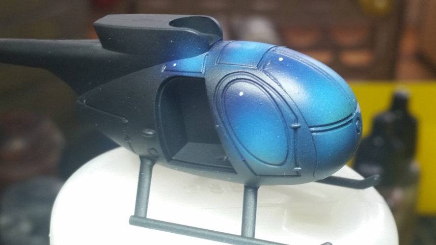
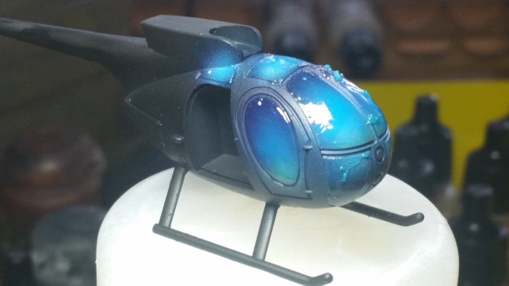
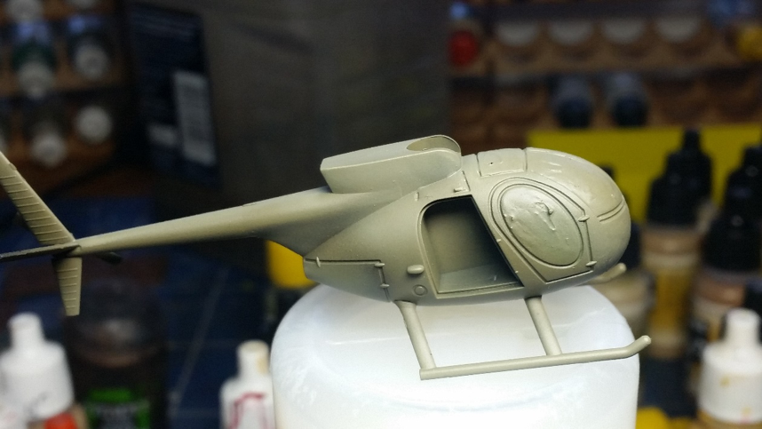
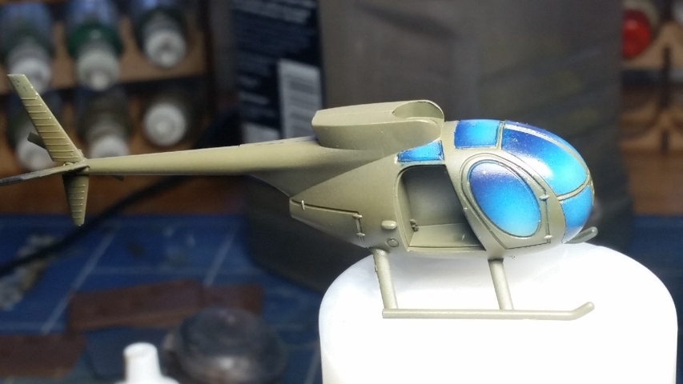

Canopies and windows
June 31, 2017 by John
After receiving a number of helicopters to paint recently I was looking for a way of improving the look if not the accuracy of the helicopter canopies. This method can be used for all vehicle glass where you don’t want to see the cockpit details or when you can’t as with resin models - so helicopters, aircraft and futuristic vehicles like Eldar flyers are all candidates.
The result is striking but not 100% realistic and I suspect works best when the aircraft is imagined to be flying in a clear blue sky…
I used a Loach by Battlefront and Vallejo paints

It was undercoated black for no better reason than I always undercoat anything ‘vehicular’ black then started the windows with a coat of the darkest blue. Working on the principle that the dark blue sky above would provide less reflected light than the ground below I then airbrushed increasing amounts of lighter blue towards the bottom.
In truth I have no idea if this principle is true and as you can see I also ignored the principle occasionally. Once done I dotted a little highlight in the dark area for effect.
As an aside, once I had the hang of this I latterly added a further subtle spray of a greeny yellow around the bottom edge of each panel to suggest a reflection from the ground as well but this is one of those things which may not be worth it.
I then sprayed the whole with gloss varnish to protect against the damage I was sure I would inflict in the next stage.The next picture does not show badly applied gloss varnish but is the result of thickly applied rubber masking solution.

This needs to be applied right up to the edge and even into the little runnels or grooves around the glass but no further if using an airbrush as it is really difficult to colour match any resultant mistakes on modulated airbrushing.
Brushes can be cleaned in warm soapy water, the warmer the better but you won’t be using that brush for any detailed work again. Leave to dry and check for gaps...a learning moment was had here. Gaps are bad. If you see any gaps don’t try to put more masking on until the previous is dry…another learning moment.
Once dry you’re good to go with painting the rest of the model. In this case it was airbrushing ever lighter coats of Olive Drab. As a personal preference I like modulation painting but like it to be subtle over larger areas with no clear delineation. By contrast where there are panels etc I am more defined. On this Loach it is less obvious.
After painting the usual steps were taken involving filters, washes and weathering. I might be wrong but I assume that aircraft of all types - unless in very difficult circumstances - will be looked after and maintained better than ground vehicles and crash into stuff infrequently. Probably only the once really. As such there is less chipping etc

Removing the masking fluid is a bit picky. Most can be gently rubbed off with your thumb but where it clings onto details it needs to be removed with a wooden toothpick, trying to avoid scratching beneath. At this point it can look a bit ragged as below but don’t get depressed.

Where the effect runs just short of the frame you can fill with thinned colour until you get close enough and if the glass effect is into the frame grooves that will be covered by darker washes.
Below are couple of finished Heli’s showing the nice contrast between canopy and fuselage. As always rule of cool wins over 100% accuracy.